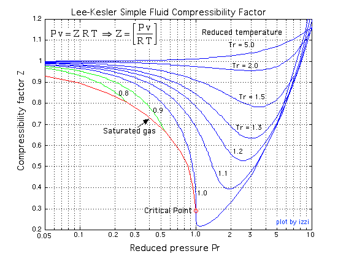

The Gas Laws module works to emphasize the strengths and setbacks to using the Ideal Gas Law in comparison to other equations of state. Use the module to visually see on various graphs the differences between real gas data and three different equations of state in order to understand where some/all of those equations appropriately model the data and where some/all of them fall short.
NOTE: If the module below is not appearing, try refreshing or opening this page in a private/incognito window.
Jump to ModuleIn order to demonstrate the relationship between temperature, pressure, and volume for gases, the ideal gas law is commonly used.
Ideal Gas Law
\[ PV = nRT \]The ideal gas law makes four assumptions:
In reality, an ideal gas does not exist. All gas particles possess some volume, exhibit intermolecular forces with the gas particles surrounding it, and do not have perfect elastic collisions due to the conservation of energy and momentum that is within the system.
Even with these drawbacks to the ideal gas law, real gases can behave ideally under certain conditions. This includes considerably low pressures or high temperatures; under these conditions, the volume and intermolecular attractions of a gas particle become small enough they can be considered negligible.
Z-factor compressibility charts can be used to visualize the behavior of a specific molecule in comparison to its assumed behavior calculated from the ideal gas law. Below is a generalized compressibility chart. If a gas were to behave perfectly ideally, it would be a horizontal line at Z=1. Instead, it can be seen that at certain ranges of reduced pressures and temperatures, the line deviates significantly. Those regions are regions of low pressure and high temperature, where ideality deviates the most. When generating the temperature, volume, and pressure ranges for the module, compressibility factor charts were consulted to find an appropriate range that represents ranges of relative ideality and deviations from ideality.

Other equations of state try to account for the unrepresented variables in the ideal gas law. For example, the Van Der Waals equation includes the variable a for intermolecular forces and b in order to represent the volume of 1 mole of the given molecule. Both variables a and b try to correct the assumptions made in the ideal gas law in order to more accurately predict the behavior of a gas, and are calculated using the critical temperature and pressure of each specific gas.
Virial Equation of State
\[ P = \frac{RT}{\hat{V} - b} - \frac{a}{\hat{V}^2} \quad \text{with} \quad a = \frac{27R^2T_c^2}{64P_c}, \quad b = \frac{RT_c}{8P_c} \]Additionally, the Soave-Redlich-Kwong (SRK) equation of state tackles the molecular volume and attraction of real gas particles in an equation that implements a, b, and ω (Pitzer Acentric Factor) to formulate an equation to more closely model real gas behavior.
Soave-Redlich-Kwong Equation of State
\[ P = \frac{RT}{\hat{V} - b} - \frac{\alpha a}{\hat{V}(\hat{V} + b)} \] \[ \begin{aligned} a &= 0.42747 \, \frac{(RT_c)^2}{P_c} \\[6pt] b &= 0.08664 \, \frac{RT_c}{P_c} \\[6pt] m &= 0.48508 + 1.55171\,\omega - 0.1561\,\omega^2 \\[6pt] T_r &= T / T_c \\[6pt] \alpha &= \left[ 1 + m\left( 1 - \sqrt{T_r} \right) \right]^2 \end{aligned} \]In order to use the module, select from the dropdown menu on the top left the substance you would like to use. From there, you can select which graph you would like to view: Pressure vs. Volume, Pressure vs. Temperature, Volume vs. Temperature. Each graph allows you to slide the unknown variable to your desired quantity. The arrow keys on your keyboard can also be used to adjust that value. When hovering your mouse over the graph, you can see the specific values from each real gas data point or equation of state. Right click or use the buttons on the right side of the graph itself to toggle on/off the hover tool as desired. If you want to zoom in to specific portions of the graph, that can also be done by either right clicking or using the buttons on the right side of the graph. Additionally, by clicking on the legend’s values, they can be hidden/shown on the graph in order to more clearly see the data being observed.